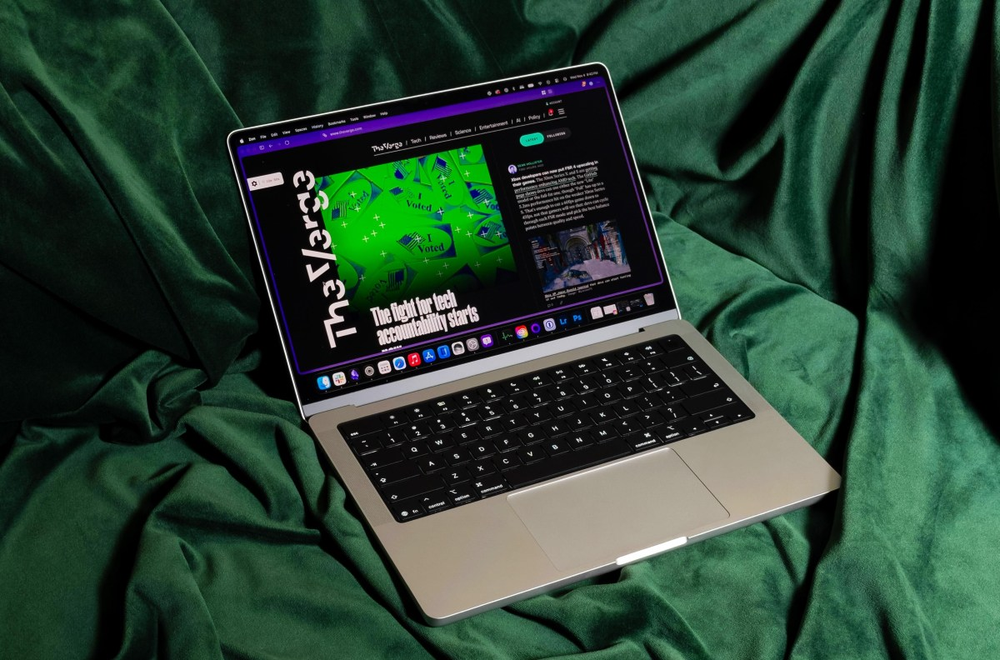
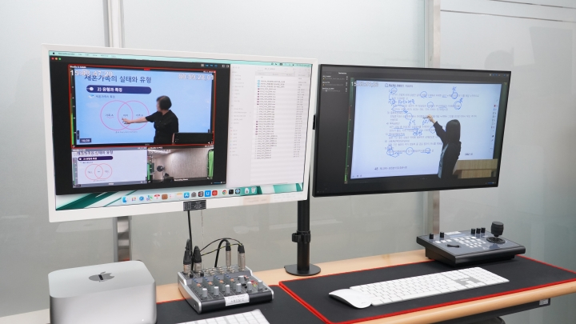
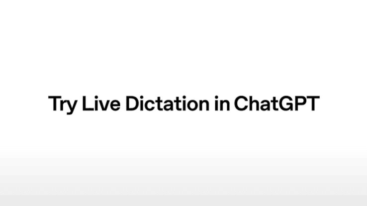

ADDIT DAILY MARKETING BRIEF
말로 시키는 AI,
실행 권한부터
설계하자
Gemini는 맥의 파일·앱을 다루고, ChatGPT는 받아쓰기를 실시간화했습니다. 편리함이 커질수록 접근 범위와 검수선이 중요해집니다.
GOOD MORNING, ADDIT오늘은 AI가 글을 생성하는 단계를 넘어 파일·앱·공장·교육 현장을 직접 다룰 때 필요한 접근 범위, 중간 검수, 성과 환원의 조건을 점검합니다.
TODAY’S 5 SIGNALS
11.20 · COMPUTER USE & WORK REDESIGN01Gemini, 맥의 파일·앱·웹을 넘나드는 작업
03ChatGPT 받아쓰기, 입력 중 검수 가능
04AI 자동화 성과를 주 38시간 근무로 환원
05AI 에이전트의 개인정보 혼선과 실행 위험
CASE STUDY
4 KR / 1 GLOBAL · 원문·이미지 대조 완료
01 · GLOBAL
Gemini가 맥의 파일과 앱을 오가며 작업하다
대화 → 컴퓨터 사용
구글의 맥용 Gemini 앱은 로컬 파일, 데스크톱 앱, 웹사이트를 넘나드는 다단계 작업을 돕기 시작했다. 사용자는 접근을 허용할 앱을 정하고, 별도 창에서 AI의 작업 과정을 확인할 수 있다.
The Verge 원문 ↗ADDIT INSIGHT컴퓨터 사용형 에이전트는 기능보다 접근 범위가 핵심이다. 어떤 앱·파일·웹사이트를 허용했는지 사용자가 항상 확인할 수 있어야 한다.

02 · KR
유비온, AI 자동화 성과를 주 38시간 근무로 연결
자동화 → 근로시간 환원
유비온은 고객 문의 이관을 약 20시간에서 10분 이내로, 교육 콘텐츠 후속 처리를 100분에서 20분으로 줄였다고 소개했다. 반복 메일 자동화와 업무 재설계를 통해 주 38시간 근무를 운영하는 사례다.
대한민국 정책브리핑 원문 ↗ADDIT INSIGHTAI 도입의 성과는 줄어든 시간을 다시 업무량으로 채우는 데 있지 않다. 자동화로 확보한 시간을 조직 구성원과 품질 개선에 되돌리는 설계가 필요하다.
03 · KR
UNIST, 실제 산업 문제를 AI 수업으로 가져오다
교육 → 산업 문제
UNIST는 2030년까지 조선해양·자동차·소재 분야에 AI를 적용할 인재 2,000명을 양성하겠다고 밝혔다. 학생이 업종별 실제 문제를 다루는 방식으로 전공 선택과 산업 현장의 연결을 강화한다.
인공지능신문 원문 ↗ADDIT INSIGHTAI 교육은 도구 사용법만 가르칠 때보다 현업의 문제 정의와 데이터 조건을 함께 다룰 때 조직의 실행력으로 이어진다.
04 · KR
SKT, 자율주행 없는 차량도 공장 안에서 무인 이송
설비 → 주변 인프라
SK텔레콤은 자율주행 기능이 없는 차량을 운전자 없이 공장 안에서 옮기는 기술을 개발했고, 2027년 자동차 공장 물류 적용을 추진한다. 차량 자체가 아니라 주변 설비가 이동 판단과 제어를 맡는 구조다.
인공지능신문 원문 ↗ADDIT INSIGHT피지컬 AI는 모든 기기에 지능을 넣는 경쟁만이 아니다. 기존 장비를 바꾸지 않고 주변 인프라로 실행 환경을 만드는 방식도 중요한 도입 전략이다.

05 · KR
ChatGPT 받아쓰기, 말하는 중에 글을 확인한다
음성 입력 → 실시간 검수
OpenAI는 ChatGPT 받아쓰기에서 말하는 동안 변환된 문장을 화면에 보여주고, 기존 10분 녹음 제한을 없애는 업데이트를 순차 배포한다고 밝혔다. iOS·안드로이드·웹·데스크톱 앱의 모든 요금제가 대상이다.
AI타임스 원문 ↗ADDIT INSIGHT음성 입력이 길어질수록 정확도보다 중간 검수가 중요하다. 변환 중 텍스트를 보여주면 사용자는 이름·수치·고유명사를 즉시 고칠 수 있다.
PRACTICAL INSIGHT
오늘 바로 적용할 운영 원리SOURCE CHECK
11.20 제공 원문·관련 공식 자료 검수ADDIT ACTION CHECK
- AI가 접근할 앱·파일·웹사이트 범위를 최소화했는가?
- 음성·문서·자동 실행 결과를 중간에 검수할 수 있는가?
- 자동화로 확보한 시간을 품질과 휴식으로 환원하는가?
- 기존 장비와 주변 인프라를 활용할 실행 구조가 있는가?
- 공식 원문과 대표 이미지가 정확히 연결됐는가?